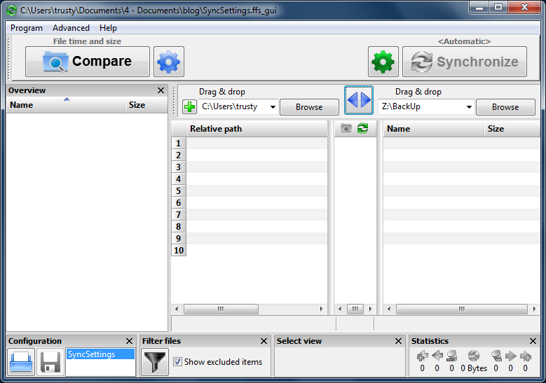
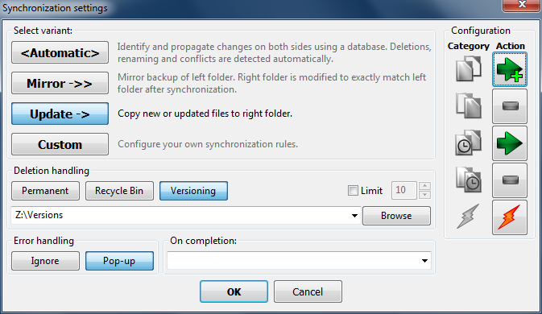
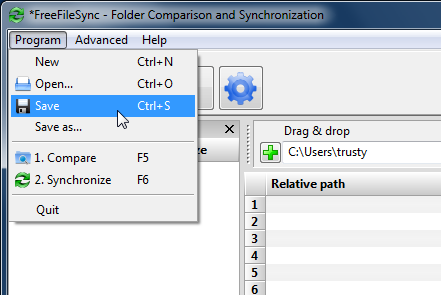

Automatic Backup with FreeFileSync | JulianBen.com

Using a “left” and “right” model, the original files are on the left. The original and backup folders can be dragged into the interface. After selecting the folders, the Synchronize button will sync the two sides. Clicking the green gear icon opens the synchronization settings window.

I use the Update option. This copies the new files on the left side to the right side. I also use Versioning in the Deletion Handling section. Before a file on the right side is over-written, the old version is placed in the Versioning folder. Each day a new version folder is created with a date stamp. If you edit a file every day, you will get a new version every day. Since hard drive space is cheap, I usually keep my old versions forever, but they could be deleted at any time.
When everything is setup, save your settings.

This creates a batch file that can be setup as an automatic process using the Windows Task Scheduler.
In Task Scheduler, create a Basic Task
“C:\Program Files\FreeFileSync\FreeFileSync.exe”
AS THE PROGRAM
“x:\FreeFileSync\Batch\SyncSettings.ffs_batch”
AS THE OPTIONAL ADDED ARGUMENT.
It is critical that both of the above options be inside double quotes.